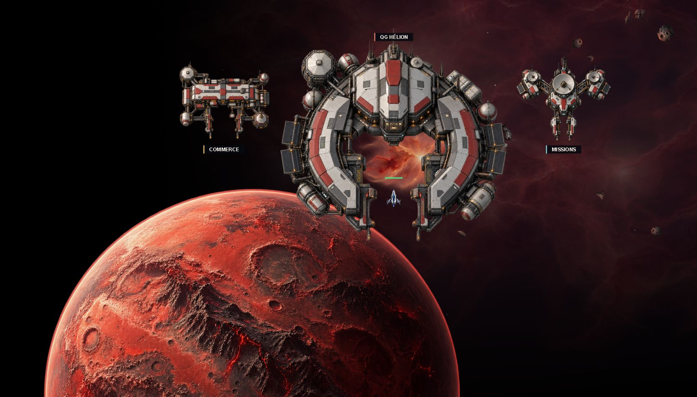
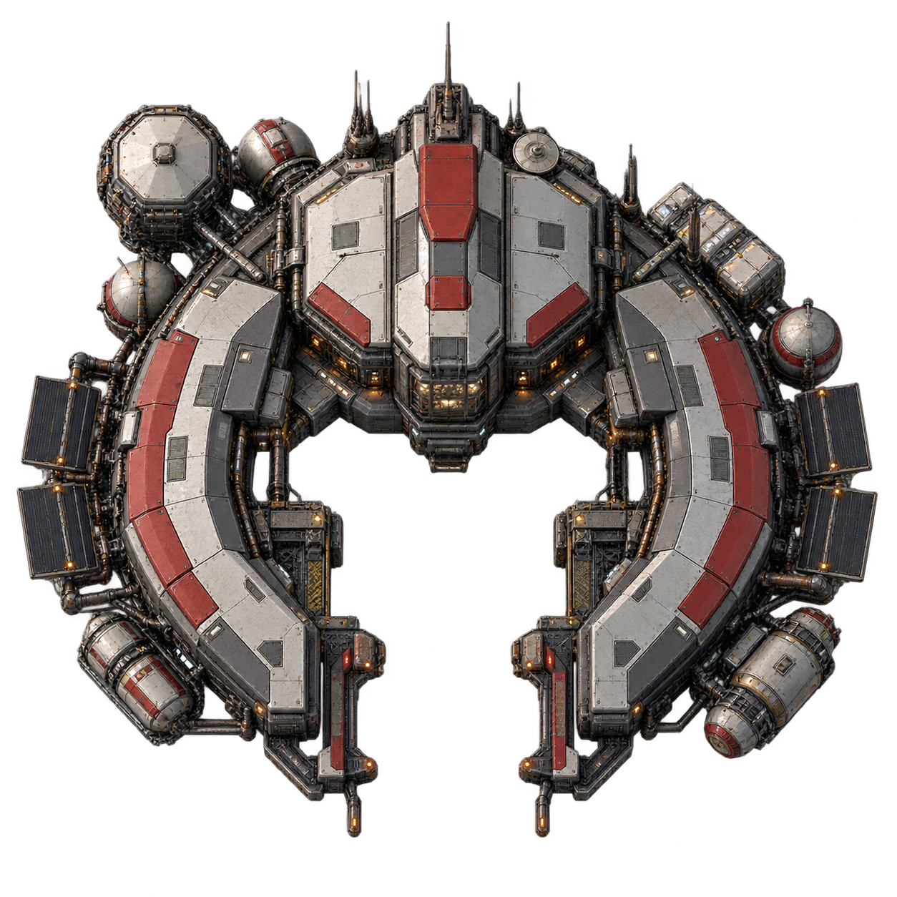
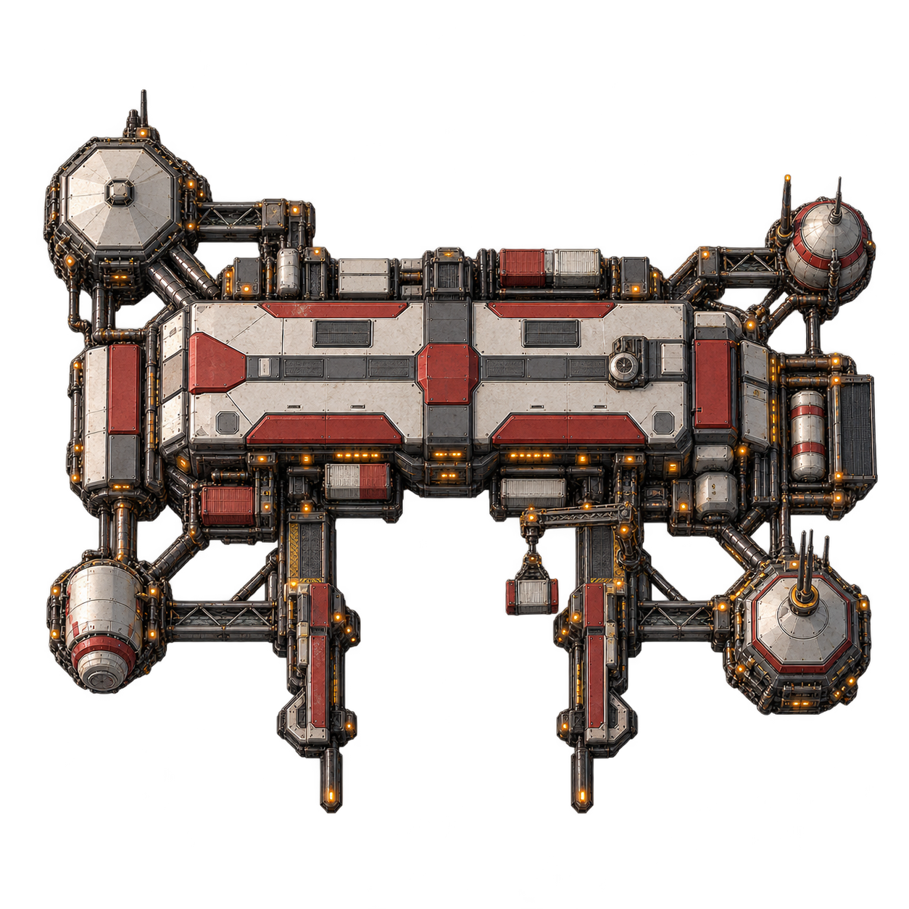
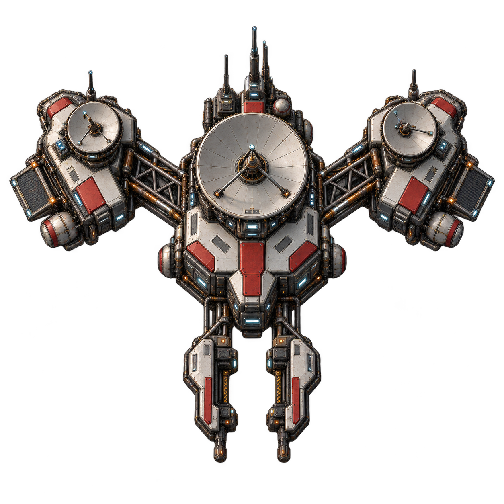
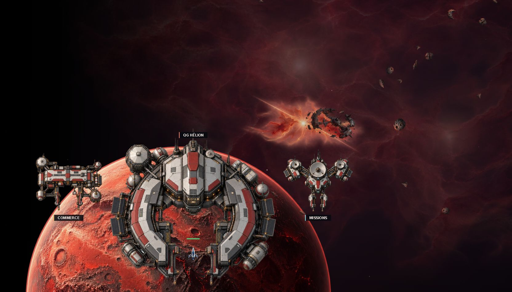

Avosoma · Hélion · 22 octobre 2026
Une base orbitale, trois fonctions lisibles
Coques titane et graphite, accents rouges et éclairage sobre. Le QG est plus compact ; le commerce et le relais de missions partagent ses matériaux.
Proposition visuelle — stations non remplacées dans les parties
Au spawn, à l’échelle du jeu

Proposition assemblée dans le moteur de décor réel. Le vaisseau conserve sa taille ; le QG passe de 1 460 à 720 unités.
Les trois structures en détail

QG orbital
Une coque de commandement et deux bras ouverts encadrent l’approche du vaisseau. La structure laisse de l’espace visible au centre.
Ouvrir le PNG transparent
Comptoir commercial
Quais de fret, conteneurs et modules de stockage. Des balises ambre distinguent le commerce.
Ouvrir le PNG transparent
Relais de missions
Paraboles et capteurs donnent une fonction claire au relais. Les indicateurs cyan restent discrets.
Ouvrir le PNG transparent
Autre point de vue

Autre cadrage de la même proposition, avec la planète et le fond actuels.
Fichiers sources et direction artistique
Trois sprites RGBA séparés, de 1 254 × 1 254 pixels, générés avec imagegen. Les vues d’ensemble proviennent du renderer du jeu dans un aperçu isolé. Les structures, échelles, positions et libellés restent des propositions visuelles.
Prompts complets : QG · Commerce · Missions.
Références d’organisation et de silhouettes consultées : archives officielles des bases DarkOrbit et station de missions Nyx. Les trois designs présentés ici sont nouveaux.